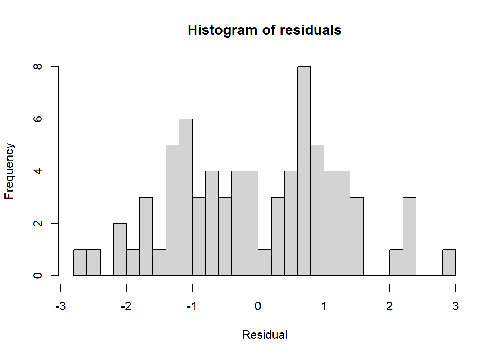
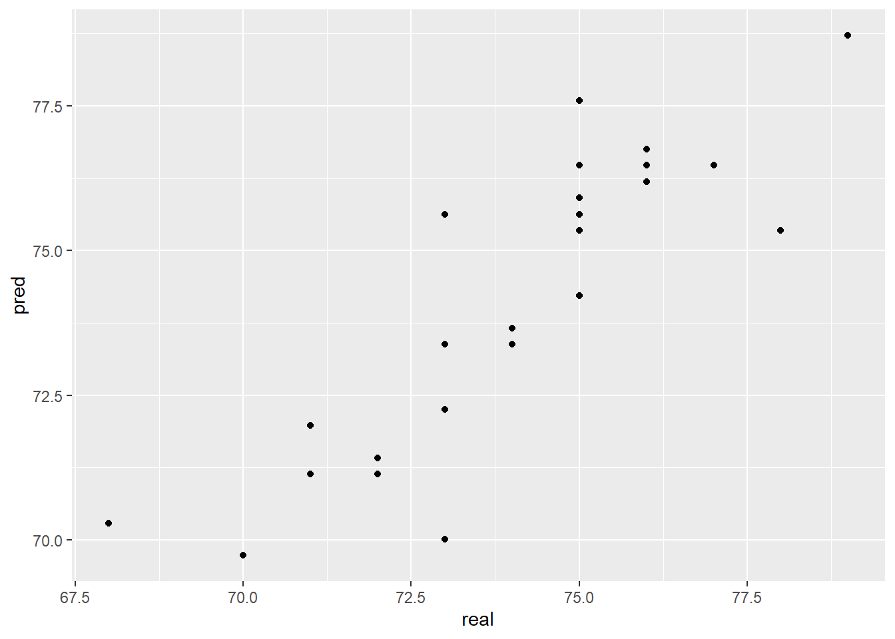

library(tidyverse)
library(caret)
library(ModelMetrics)Presentation 5: Intro to Modelling in R
In this section we’ll look at how to define and fit a model in R.
Load packages
Load data
In order to focus on the technical aspects we’ll use a very simple toy dataset. It contains the number of cigarettes smoked per day and how long the person lived. It is inspired by this paper if you want to take a look.
df_smoke <- read.csv('../data/smoking.csv')
head(df_smoke) daily_cigarettes life
1 7 76
2 11 73
3 27 72
4 23 71
5 13 74
6 11 76We will use this to perform a linear regression.

Linear Regression
Split Data into Training and Test Set
First, we will split our data into a test and a training set. There are numerous ways to do this. We here show sample_frac from dplyr:
# Set seed to ensure reproducibility
set.seed(123)
#add an ID column to keep track of observations
df_smoke$ID <- 1:nrow(df_smoke)
train <- df_smoke %>% sample_frac(.75)
nrow(train)[1] 75head(train) daily_cigarettes life ID
1 29 72 31
2 16 73 79
3 5 78 51
4 3 77 14
5 4 79 67
6 23 71 42As you can see, the ID’s in train are shuffled and it only has 75 rows since we asked for 75% of the data. Now all we have to do is identify the other 25%, i.e. the observations not in train. dpylr has a neat function called anti_join for that:
#from df_smoke remove what is in train by checking the ID column
test <- anti_join(df_smoke, train, by = 'ID')
nrow(test)[1] 25head(test) daily_cigarettes life ID
1 7 76 1
2 11 73 2
3 27 72 3
4 32 70 10
5 8 75 11
6 16 75 24Defining the model
As stated above, a linear regression model generally has the form of:
\[y=b_0+b_1*x_i\]
Where we refer to \(b_0\) as the intercept and \(b_1\) as the coefficient. There will typically be one coefficient for each predictor. The goal of modelling is to estimate the values of \(b_0\) and all \(b_i\).
We need to tell R which of our variables is the outcome, \(y\) and which predictors \(x_i\) we want to include in the model. This is referred to in documentation as the model’s formula. Have a look:
#the formula is written like so:
lm(y ~ x_1 + x_2 + ...)
#see the help
?lmIn our case, \(y\) is the number of years lived and we have a singular predictor \(x_1\), the number of cigarettes smoked per day. So that will be our model formulation:
#remember to select the training data subset we defined above!
model <- lm(life ~ daily_cigarettes, data = train)Modelling results
By calling lm we have already trained our model! Lets have a look at the results. The summary gives us a lot of information about the model we trained:
# View model summary
summary(model)
Call:
lm(formula = life ~ daily_cigarettes, data = train)
Residuals:
Min 1Q Median 3Q Max
-2.71479 -1.03035 -0.06517 0.82928 2.84669
Coefficients:
Estimate Std. Error t value Pr(>|t|)
(Intercept) 78.71479 0.26847 293.20 <2e-16 ***
daily_cigarettes -0.28074 0.01351 -20.77 <2e-16 ***
---
Signif. codes: 0 '***' 0.001 '**' 0.01 '*' 0.05 '.' 0.1 ' ' 1
Residual standard error: 1.251 on 73 degrees of freedom
Multiple R-squared: 0.8553, Adjusted R-squared: 0.8533
F-statistic: 431.5 on 1 and 73 DF, p-value: < 2.2e-16It beings with Call which displays the formula used to fit the model.
The Residuals section summarizes the distribution of the residuals, which is the difference between the actual observed \(y\) values and the fitted \(y\) values.
The Coefficients table shows the estimated values for each coefficient including the intercept, along with their standard errors, t-values, and p-values. These help to determine the significance of each predictor. Smaller p-values indicate stronger evidence against the null hypothesis that the true coefficient is zero.
In the bottom section we have some information about how well model fits the training data. The Residual Standard Error (RSE) provides a measure of accuracy as it represents the average size of the residuals. The R-squared value indicates the proportion of variance explained by the model, with the Adjusted R-squared accounting for the number of predictors to prevent overfitting. Finally, the F-statistic and its p-value test whether the model as a whole explains a significant portion of the variance in the response variable (the outcome \(y\)).
Overall, the summary helps us to assess the model fit and identify significant predictors and their effect size (size of the coefficient).
We can extract the model object’s components with $:
model$coefficients (Intercept) daily_cigarettes
78.7147894 -0.2807398 hist(model$residuals, breaks = 30, main = 'Histogram of residuals',
xlab = 'Residual')
Model interpretation
What do these results mean? Our model formulation is:
\[life=b_0+b_1*cigarettes\]
And we estimated these values:
model$coefficients (Intercept) daily_cigarettes
78.7147894 -0.2807398 Therefore:
The intercept \(b_0\) is the number of years we estimated a person in this dataset will live if they smoke 0 cigarettes. It is 78.7 years
The coefficient of cigarettes per day is -0.28. This means for every 1 unit increase in cigarettes (one additional cigarette per day) the life expectancy decreases by 0.28 years.
Model performance
We now use our held out test data to evaluate the model performance. For that we will predict life expectancy for the 25 observations in test and compare with the actual values.
#use the fitted model to make predictions for the test data
y_pred <- predict(model, test)
y_pred 1 2 3 4 5 6 7 8
76.74961 75.62665 71.13481 69.73112 76.46887 74.22295 77.59183 70.29260
9 10 11 12 13 14 15 16
73.38073 70.01186 76.46887 75.62665 75.34591 76.46887 73.38073 75.34591
17 18 19 20 21 22 23 24
76.18813 71.41555 73.66147 71.13481 71.97703 75.34591 72.25777 75.90739
25
78.71479 Let’s see how that fits with the known values.
pred <- tibble(pred = y_pred, real = test$life)
ggplot(pred, aes(x=real, y=pred)) +
geom_point()
Not too bad! We usually calculate the mean square error (mse) between predictions and the known true values to numerically evaluate regression performance:
mse(pred$real,pred$pred)[1] 1.742902Our predictions are on average 1.7 years wrong.
Regression with categorical features
Now that we know how to make a simple linear model, how can we include categorical variables and what is the interpretation of their coefficients? To investigate this we will load a second version of the dataset that contains an additional variable: Exercise level.
df_smoke <- read.csv('../data/smoking_cat.csv')
head(df_smoke) daily_cigarettes life exercise
1 7 76 0
2 11 73 0
3 27 72 1
4 23 71 0
5 13 74 0
6 11 76 1distinct(df_smoke, exercise) exercise
1 0
2 1
3 2Alright, we have three different levels of exercise. They are: low == 0, moderate == 1 and high == 2. Before we go on, let’s have a look if our data is represented correctly:
str(df_smoke)'data.frame': 100 obs. of 3 variables:
$ daily_cigarettes: int 7 11 27 23 13 11 20 6 23 32 ...
$ life : int 76 73 72 71 74 76 71 76 72 70 ...
$ exercise : int 0 0 1 0 0 1 0 1 1 2 ...We can see that the exercise column is interpreted as an integer. However, it is actually a category! In R categorical variables are known as factors and have their own datatype. Let’s convert exercise to a factor:
df_smoke$exercise <- as.factor(df_smoke$exercise)
str(df_smoke)'data.frame': 100 obs. of 3 variables:
$ daily_cigarettes: int 7 11 27 23 13 11 20 6 23 32 ...
$ life : int 76 73 72 71 74 76 71 76 72 70 ...
$ exercise : Factor w/ 3 levels "0","1","2": 1 1 2 1 1 2 1 2 2 3 ...As before, before fitting the model we’ll split up the data in train and test. Since we’re using the same seed we should get the same observations, i.e. rows into training and test as above.
# Set seed to ensure reproducibility
set.seed(123)
#add an ID column to keep track of observations
df_smoke$ID <- 1:nrow(df_smoke)
train <- df_smoke %>% sample_frac(.75)
test <- anti_join(df_smoke, train, by = 'ID') And now we extend our previous model formula with the new predictor:
model2 <- lm(life ~ daily_cigarettes + exercise, data = train)summary(model2)
Call:
lm(formula = life ~ daily_cigarettes + exercise, data = train)
Residuals:
Min 1Q Median 3Q Max
-1.58295 -0.53972 -0.01596 0.53773 1.70257
Coefficients:
Estimate Std. Error t value Pr(>|t|)
(Intercept) 77.582954 0.234237 331.216 < 2e-16 ***
daily_cigarettes -0.285521 0.009401 -30.372 < 2e-16 ***
exercise1 1.095475 0.249402 4.392 3.84e-05 ***
exercise2 2.372227 0.260427 9.109 1.48e-13 ***
---
Signif. codes: 0 '***' 0.001 '**' 0.01 '*' 0.05 '.' 0.1 ' ' 1
Residual standard error: 0.8578 on 71 degrees of freedom
Multiple R-squared: 0.9338, Adjusted R-squared: 0.931
F-statistic: 333.7 on 3 and 71 DF, p-value: < 2.2e-16When we check the summary we see that it has two additional coefficients, exercise1 and exercise2. What are they?
Because exercise is a categorical variable it is dummy coded. That means our model formula mathematically looks something like this:
\[y=b_0+b_1*x_1 + b_2 *x_2 + b_3*x_3\]
with:
| Exercise level | \(x_2\) | \(x_3\) |
|---|---|---|
| 0 | 0 | 0 |
| 1 | 1 | 0 |
| 2 | 0 | 1 |
And for our coefficients it means:
model2$coefficients (Intercept) daily_cigarettes exercise1 exercise2
77.5829543 -0.2855213 1.0954747 2.3722266 Intercept== \(b_0\): The life expectancy at 0 cigarettes and exercise level 0daily_cigerettes== \(b_1\): The change in life expectancy for each additional cigarette.exercise1== \(b_2\): The change in life expectancy if the exercise level is 1 (assuming the number of cigarettes stays constant).exercise2== \(b_3\): The change in life expectancy if the exercise level is 2 (assuming the number of cigarettes stays constant).
Why is there no coefficient for exercise level 0 (low amount of exercise)? This case is covered in the Intercept. It is referred to as the reference level of the categorical variable. You can change which level is regarded as the reference and the effect of having this level will always be modelled in the intercept.